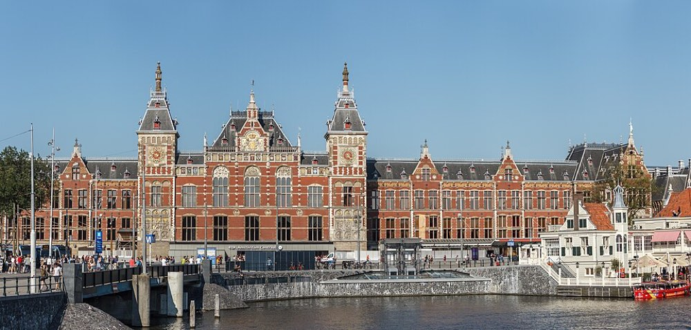

LUDWIG WITTGENSTEIN · 2026
Considered by some to be the greatest philosopher of the 20th century, Wittgenstein played a central, if controversial, role in mid-20th-century analytic philosophy. He continues to influence debate in topics as diverse as logic and language, perception and intention, ethics and religion. Two stages are commonly recognised. The early Wittgenstein is epitomised in Tractatus Logico-Philosophicus; the later, in Philosophical Investigations, took the more revolutionary step of critiquing all of traditional philosophy including his own early work. The new philosophy is heralded as anti-systematic through and through, yet still conducive to genuine understanding of the traditional problems. In more recent scholarship this division has been questioned: some interpreters claim a unity between all stages, others a more nuanced division with a middle and a post-later Wittgenstein.
%%{init:{"flowchart":{"curve":"linear","nodeSpacing":26,"rankSpacing":32}}}%%
flowchart TB
E["early"]:::c4 --> T{"turn"}:::c1
T -->|"picture"| P["Tractatus"]:::c2
T -->|"use"| U["Investigations"]:::c3
P --> L["language"]:::c5
U --> L
No. 03 logic / language / method


AMSTERDAM CENTRAAL No. 02 brick / rail / water 1889